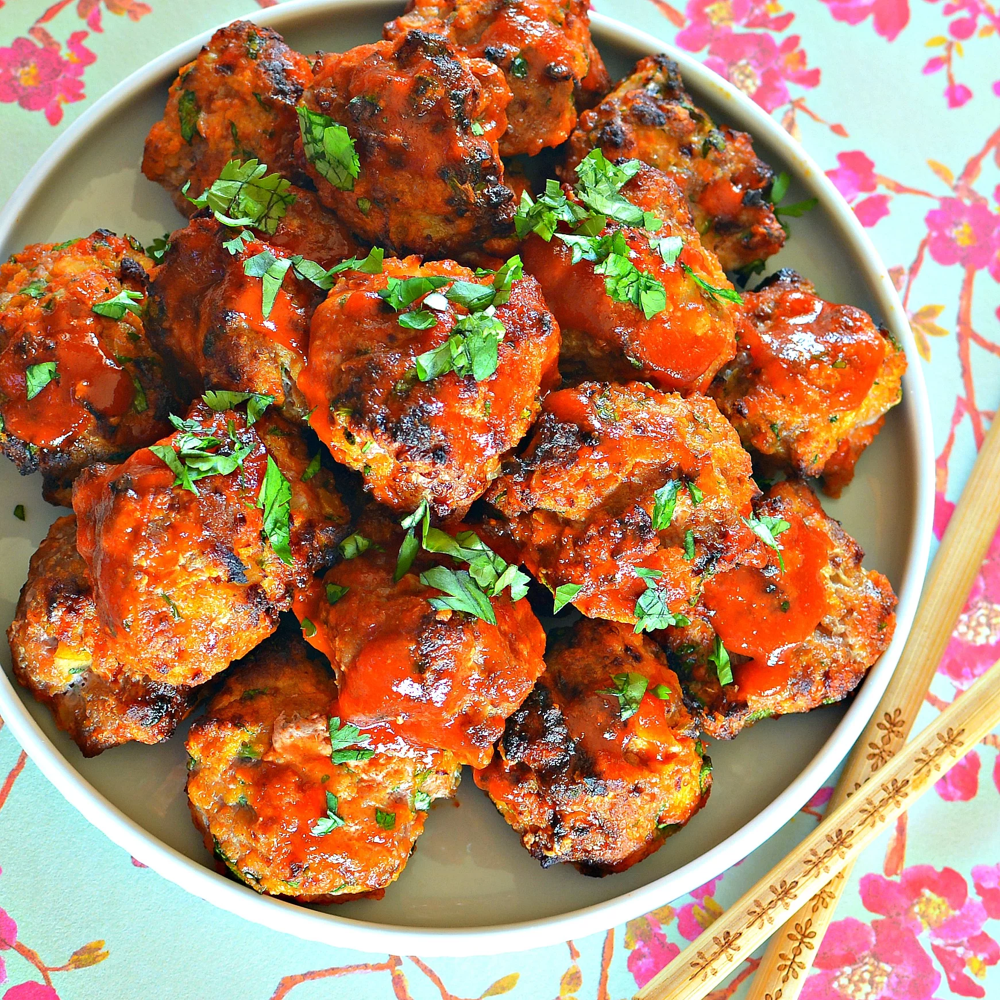
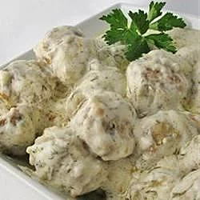

Meatball Recipe
The great thing about meatballs is that they can be as simple or dressed up as you want.
And everybody loves meatballs! So whether you choose
- traditional Italian meatballs,
- Sriracha chicken meatballs
- Mexican albondigas
- Scandinavian meatballs
our collection of top-rated meatball recipes has you covered. From Mexican albondigas to Scandinavian meatballs,
from Greek- to Asian-inspired variations, these creative meatball recipes span the globe!

How to make Danish Meatballs with Dill Sauce

This is a very tasty, but unique, meatball recipe perfect for holiday parties.
For some reason, men love these! I have found that purchasing pre-made meatballs cuts the prep time significantly and tastes good, too.
Required Ingredients:
- 1 pound ground beef
- ½ pound ground pork
- ½ pound ground veal
- 2 teaspoons salt
- ½ teaspoon ground black pepper
- 2 eggs
- ⅓ cup finely chopped onion
- ½ cup heavy cream
- 1 cup dry bread crumbs
- 1 cup butter
- ¼ cup all-purpose flour
- 2 cups chicken broth
- 2 cups sour cream
- ¼ cup chopped fresh dill
Directions
- Preheat oven to 375 degrees F (190 degrees C).
- In a large bowl, mix beef, pork, veal, salt, pepper, eggs, onion and heavy cream. With moistened hands, shape the mixture into 1 inch balls.
Roll the balls in the bread crumbs until all balls are well coated.
Arrange in a single layer on a large, shallow baking sheet.
- Melt 1/2 cup butter in a large saucepan over low heat.
Stir in the flour. Gradually stir in the chicken broth.
Continue stirring until thickened and bubbly, then blend in the sour cream and fresh dill.
- Melt remaining butter in a small saucepan, and drizzle over the meatballs.
Bake meatballs in the preheated oven 35 minutes, turning occasionally, until evenly browned.
- Place meatballs in a chafing dish and cover with the sauce to serve.
Original meatball recipe site is here: Danish Meatballs with Dill Sauce